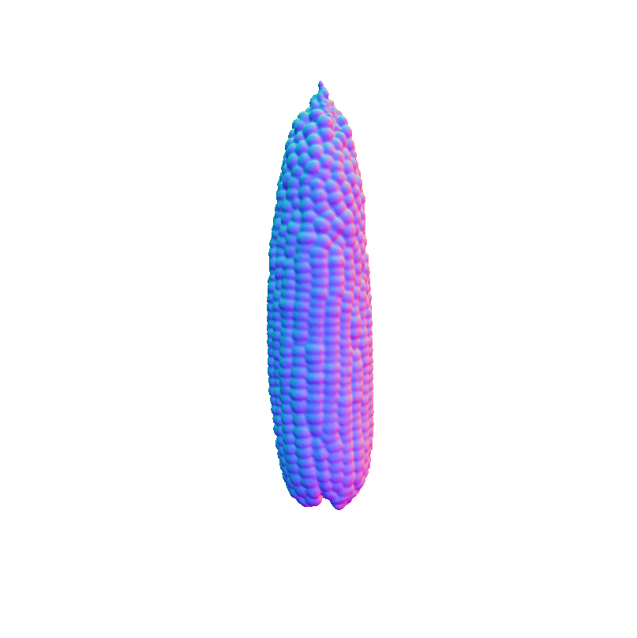
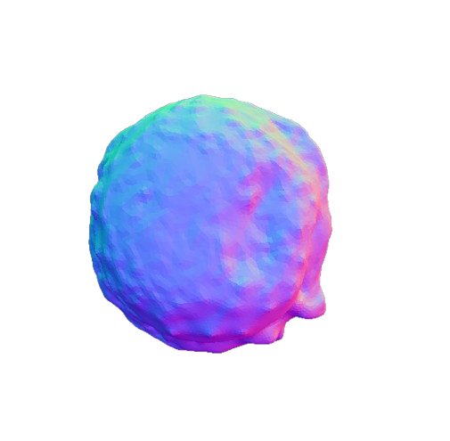
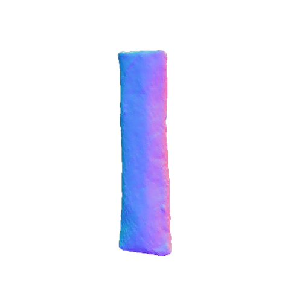

VolE: A Point-cloud Framework for Food 3D Reconstruction and Volume Estimation


Volume = 173.13 cm³
EP = 7.79%, CD = 0.0030
EP = 1.91%, CD = 0.0012
Comparison of 3D reconstruction and volume estimation for the Cake scene (MTF dataset): (a) Ground truth (GT) 3D model with a volume of 173.13 cm³. (b) The VolETA[1] reconstruction shows a volume of 186.62 cm³, with a volume error percentage (EP) of 7.79% and a Chamfer distance (CD) of 0.0030. (c) In comparison, our VolE framework achieves a volume of 176.43 cm³, with a lower EP of 1.91% and a CD of 0.0012, demonstrating enhanced accuracy and geometric fidelity.
Abstract
Accurate food volume estimation is crucial for medical nutrition management and health monitoring applications, but current food volume estimation methods are often limited by mononuclear data, leveraging single-purpose hardware such as 3D scanners, gathering sensor-oriented information such as depth information, or relying on camera calibration using a reference object. In this paper, we present VolE, a novel framework that leverages mobile device-driven 3D reconstruction to estimate food volume. VolE captures images and camera locations in free motion to generate precise 3D models, thanks to AR-capable mobile devices. To achieve real-world measurement, VolE is a reference- and depth-free framework that leverages food video segmentation for food mask generation. We also introduce a new food dataset encompassing the challenging scenarios absent in the previous benchmarks. Our experiments demonstrate that VolE outperforms the existing volume estimation techniques across multiple datasets by achieving 2.22% MAPE, highlighting its superior performance in food volume estimation.
Overview of the VolE framework, illustrating its four key stages: (a) Data Acquisition which utilizes ARCore/ARKit to generate initial images (ùìò) and 3D coordinates per image (ùìí); (b) Parameters Extraction processing Structure from Motion including Feature Extraction (ùêÖi), Feature Matching (ùêåab) and Geometric Verification (ùêÜab), alongside it also includes FoodMem to segment the object of interest from RGB images and provide Segmented Masks (ùì¢); (c) 3D Mesh Reconstruction integrating point cloud masking (ùìü), Mesh Reconstruction (ùìú) and Mesh Refinement (ùìúÃÇ) for detailed 3D representation; (d) Volume Estimation, where the object's volume is calculated from the refined mesh.
FoodKit Dataset Comparison


Visual representation of our framework results on the FoodKit dataset. Each food item is displayed with a textured mesh on the left and a shaded mesh on the right, emphasizing our framework's ability to accurately capture the 3D shape, texture, and structural details of various food items.
MTF Dataset Comparison
| 1 | 2 | 3 | 4 | 5 | 6 | 7 | 8 | 9 | 10 | 11 | 13 | 14 | |
|---|---|---|---|---|---|---|---|---|---|---|---|---|---|
| GT |  |  |
|||||||||||
| VolETA |  |
||||||||||||
| Ours |  |
 |  |
Our framework 3D reconstruction visual results on the MTF dataset in comparison with VolETA and ground truth (GT).
DTU Dataset Comparison
NeuS2
Ours
Qualitative comparison of our framework in comparison with NeuS2 on the DTU dataset.
Citation
If you want to cite our work, please use this:
@article{haroon2025vole,
title={VolE: A Point-cloud Framework for Food 3D Reconstruction and Volume Estimation},
author={Haroon, Umair and AlMughrabi, Ahmad and Zoumpekas, Thanasis and Marques, Ricardo and Radeva, Petia},
journal={arXiv preprint arXiv:2505.10205},
year={2025}
}